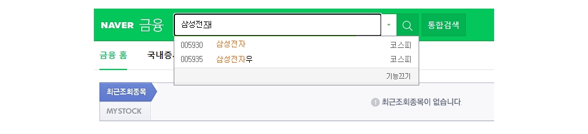

네이버에서 일별 시세 가져오기
네이버에서는 국내 주식과 관련된 다양한 정보를 제공한다. 본 포스트에서는 네이버 금융에서 일별 주식 시세를 가져오는 방법을 소개한다.
1. 홈페이지 둘러보기
네이버 금융에 접속한다.
- https://finance.naver.com/
여기서는 삼성전자를 예로 설명한다. 종목명에 삼성전자를 입력하고 검색버튼을 클릭한다.

아래에 시세 버튼을 클릭하면 시간별시세와 일별시세를 확인할 수 있다.
우리의 관심항목은 일별시세이다.
삼성전자 시세 항목의 url도 살펴보자.
- https://finance.naver.com/item/sise.naver?code=005930
get 방식으로 서버에 시세정보를 요청하는 형태이다. 파라미터로 종목코드를 사용한다.(삼성전자의 종목코드는 005930)
크롬에서 일별시세 부분을 마우스 우클릭하고 검사를 클릭한다.
개발자 도구 창이 열리면 Network 탭을 선택하자.
일별 시세 아래에 2번 페이지를 클릭해본다. sise_day.naver?code=005930&page=2라는 항목이 새로 생성되었다.
이 항목의 헤더를 살펴보면 일별 시세를 가져오고자 하는 서버 url과 파라미터, 그리고 요청 방식을 확인할 수 있다.
- 서버 주소 : https://finance.naver.com/item/sise_day.naver
- 파라미터 : code, page
- 요청방식 : GET
사실 get방식으로 url에 입력하면 일별 시세 항목을 조회할 수 있다.
예를 들어 삼성전자(005930) 시세의 첫번째 페이지를 조회하고 싶다면 다음과 같이 url을 작성하여 입력하면 된다.
- https://finance.naver.com/item/sise_day.naver?code=005930&page=1
전체 페이지에 기록된 시세를 가져오려면 마지막 페이지를 번호를 알아야 한다.
마우스로 맨뒤 항목을 가리킨 후, 마우스 우클릭-검사를 선택하자.
마지막 페이지의 url은 pgRR라는 클래스의 td 태그 내에 정의되어 있다.
- https://finance.naver.com/item/sise_day.naver?code=005930&page=641
즉, 마지막 페이지 번호는 641이다.
이로써 일별 시세를 가져오기 위한 확인과정은 모두 끝났다.
2. 일별시세 추출하기
여기서는 requests와 BeautifulSoup을 사용해서 추출하는 방법을 설명한다.
import pandas as pd
from bs4 import BeautifulSoup
import requests
from datetime import datetime
2.1 마지막 페이지 번호 찾기
먼저 마지막 페이지를 찾는 방법을 설명한다.
code = '005930' # 삼성전자 종목코드
url = f"http://finance.naver.com/item/sise_day.nhn?code={code}"
headers = {'User-agent': 'Mozilla/5.0'} # 웹브라우저 접속처럼 인식시키기 위해 정보 추가
서버 주소에 종목 코드를 추가하여 get 양식을 완성하고 요청한다.
req = requests.get(url=url, headers = headers)
req.text
'\n<html lang="ko">\n<head>\n<meta http-equiv="Content-Type" content="text/html;
charset=euc-kr">\n<title>네이버 금융</title>\n\n
<link rel="stylesheet" type="text/css" href="https://ssl.pstatic.net/imgstock/static.pc/20211216210327/css/newstock.css">\n
<link rel="stylesheet" type="text/css" href="https://ssl.pstatic.net/imgstock/static.pc/20211216210327/css/common.css">\n
<link
----(생 략)
BeautifulSoup으로 추출한 내용을 정리한다.
bs = BeautifulSoup(req.text, 'html.parser')
bs
<html lang="ko">
<head>
<meta content="text/html; charset=utf-8" http-equiv="Content-Type"/>
<title>네이버 금융</title>
<link href="https://ssl.pstatic.net/imgstock/static.pc/20211216210327/css/newstock.css" rel="stylesheet" type="text/css"/>
--- (생 략)
앞에서 마지막 페이지의 url은 pgRR라는 클래스의 td태그 내에 정의되어 있는 것을 확인했다.
이 정보를 바탕으로 마지막 페이지를 찾을 수 있다.
pgrr = bs.find('td', class_='pgRR')
print(pgrr)
<td class="pgRR">
<a href="/item/sise_day.nhn?code=005930&page=641">맨뒤
<img alt="" border="0" height="5" src="https://ssl.pstatic.net/static/n/cmn/bu_pgarRR.gif" width="8"/>
</a>
</td>
pgrr.a["href"].split('=')
['/item/sise_day.nhn?code', '005930&page', '641']
last_page = int(pgrr.a["href"].split('=')[-1])
last_page
641
2.2 일별시세 추출하기
일별 시세는 http://finance.naver.com/item/sise_day.nhn에 code와 page 정보를 추가하여 get으로 요청하면 된다.
우선 첫번째 페이지만 추출해보자.
page_url = '{}&page={}'.format(url, 1)
page_url
'http://finance.naver.com/item/sise_day.nhn?code=005930&page=1'
data = pd.read_html(requests.get(page_url, headers={'User-agent': 'Mozilla/5.0'}).text)[0]
data
| 날짜 | 종가 | 전일비 | 시가 | 고가 | 저가 | 거래량 | |
|---|---|---|---|---|---|---|---|
| 0 | NaN | NaN | NaN | NaN | NaN | NaN | NaN |
| 1 | 2021.12.27 | 80200.0 | 300.0 | 80600.0 | 80600.0 | 79800.0 | 10751648.0 |
| 2 | 2021.12.24 | 80500.0 | 600.0 | 80200.0 | 80800.0 | 80200.0 | 12086380.0 |
| 3 | 2021.12.23 | 79900.0 | 500.0 | 79800.0 | 80000.0 | 79300.0 | 13577498.0 |
| 4 | 2021.12.22 | 79400.0 | 1300.0 | 78900.0 | 79400.0 | 78800.0 | 17105892.0 |
| 5 | 2021.12.21 | 78100.0 | 1000.0 | 77900.0 | 78300.0 | 77500.0 | 14245298.0 |
| 6 | NaN | NaN | NaN | NaN | NaN | NaN | NaN |
| 7 | NaN | NaN | NaN | NaN | NaN | NaN | NaN |
| 8 | NaN | NaN | NaN | NaN | NaN | NaN | NaN |
| 9 | 2021.12.20 | 77100.0 | 900.0 | 77600.0 | 77800.0 | 76800.0 | 11264375.0 |
| 10 | 2021.12.17 | 78000.0 | 200.0 | 76800.0 | 78000.0 | 76800.0 | 13108479.0 |
| 11 | 2021.12.16 | 77800.0 | 200.0 | 78500.0 | 78500.0 | 77400.0 | 11996128.0 |
| 12 | 2021.12.15 | 77600.0 | 600.0 | 76400.0 | 77600.0 | 76300.0 | 9584939.0 |
| 13 | 2021.12.14 | 77000.0 | 200.0 | 76500.0 | 77200.0 | 76200.0 | 10976660.0 |
| 14 | NaN | NaN | NaN | NaN | NaN | NaN | NaN |
주말이나 휴일 같이 장이 열리지 않은 날은 null 값이 들어가있다.
이제 10개 페이지를 추출해보자. 전체 페이지 수와 10을 비교해서 작은 값을 추출할 페이지 수(pages)로 지정한다.
page_no = 10
pages = min(last_page, page_no) # 마지막 페이지와 가져올 페이지 수 중에 작은 값 선택
루프를 돌면서 각 페이지의 일별 시세를 추출하여 병합한다.
df = pd.DataFrame()
for page in range(1, pages+1):
page_url = '{}&page={}'.format(url, page)
df = df.append(pd.read_html(requests.get(page_url, headers={'User-agent': 'Mozilla/5.0'}).text)[0])
추출한 시세의 컬럼명을 수정하고, 데이터 타입 변경, 컬럼 순서를 조정한다.
df = df.rename(columns={'날짜':'date','종가':'close','전일비':'diff'
,'시가':'open','고가':'high','저가':'low','거래량':'volume'}) #영문으로 컬럼명 변경
df['date'] = pd.to_datetime(df['date'])
df = df.dropna() # 결측치 제거
df[['close', 'diff', 'open', 'high', 'low', 'volume']] = df[['close','diff', 'open', 'high', 'low', 'volume']].astype(int) # BIGINT형으로 지정한 컬럼을 int형으로 변경
df = df[['date', 'open', 'high', 'low', 'close', 'diff', 'volume']]
df = df.sort_values(by = 'date') # 날짜순으로 정렬
df.head()
| date | open | high | low | close | diff | volume | |
|---|---|---|---|---|---|---|---|
| 13 | 2021-08-02 | 79200 | 79500 | 78700 | 79300 | 800 | 11739124 |
| 12 | 2021-08-03 | 79400 | 81400 | 79300 | 81400 | 2100 | 24339360 |
| 11 | 2021-08-04 | 82200 | 83100 | 81800 | 82900 | 1500 | 25642368 |
| 10 | 2021-08-05 | 83300 | 83300 | 82000 | 82100 | 800 | 18485469 |
| 9 | 2021-08-06 | 81900 | 82500 | 81300 | 81500 | 600 | 13342623 |
3. 함수로 정리하기
def get_krx_code(market=None):
market_type = ''
if market == 'kospi':
market_type = '&marketType=stockMkt'
elif market == 'kosdaq':
market_type = '&marketType=kosdaqMkt'
elif market == 'konex':
market_type = '&marketType=konexMkt'
url = 'http://kind.krx.co.kr/corpgeneral/corpList.do?method=download&searchType=13{0}'.format(market_type)
stock_code = pd.read_html(url, header = 0)[0]
stock_code['종목코드'] = stock_code['종목코드'].map('{:06d}'.format)
stock_code = stock_code[['회사명', '종목코드', '업종', '상장일']]
stock_code = stock_code.rename(columns = {'회사명': 'name', '종목코드': 'code', '업종': 'sectors',
'상장일': 'listing_date'})
stock_code['listing_date'] = pd.to_datetime(stock_code['listing_date'])
return stock_code
def get_stock_price(code, num_of_pages, sort_date = True):
url = f"http://finance.naver.com/item/sise_day.nhn?code={code}"
headers = {'User-agent': 'Mozilla/5.0'}
bs = BeautifulSoup(requests.get(url=url, headers = headers).text, 'html.parser')
pgrr = bs.find("td", class_="pgRR")
last_page = int(pgrr.a["href"].split('=')[-1])
pages = min(last_page, num_of_pages) # 마지막 페이지와 가져올 페이지 수 중에 작은 값 선택
df = pd.DataFrame()
for page in range(1, pages+1):
page_url = '{}&page={}'.format(url, page)
df = df.append(pd.read_html(requests.get(page_url, headers={'User-agent': 'Mozilla/5.0'}).text)[0])
df = df.rename(columns={'날짜':'date','종가':'close','전일비':'diff'
,'시가':'open','고가':'high','저가':'low','거래량':'volume'}) #영문으로 컬럼명 변경
df['date'] = pd.to_datetime(df['date'])
df = df.dropna()
df[['close', 'diff', 'open', 'high', 'low', 'volume']] = \
df[['close','diff', 'open', 'high', 'low', 'volume']].astype(int) # int형으로 변경
df = df[['date', 'open', 'high', 'low', 'close', 'diff', 'volume']] # 컬럼 순서 정렬
df = df.sort_values(by = 'date') # 날짜순으로 정렬
if sort_date:
df = df.reset_index(drop = True)
return df
item_name = '삼성전자'
stock = get_krx_code().query("name=='{}'".format(item_name))['code'].to_string(index=False)
df = get_stock_price(stock, 10)
df.head()
| date | open | high | low | close | diff | volume | |
|---|---|---|---|---|---|---|---|
| 0 | 2021-08-02 | 79200 | 79500 | 78700 | 79300 | 800 | 11739124 |
| 1 | 2021-08-03 | 79400 | 81400 | 79300 | 81400 | 2100 | 24339360 |
| 2 | 2021-08-04 | 82200 | 83100 | 81800 | 82900 | 1500 | 25642368 |
| 3 | 2021-08-05 | 83300 | 83300 | 82000 | 82100 | 800 | 18485469 |
| 4 | 2021-08-06 | 81900 | 82500 | 81300 | 81500 | 600 | 13342623 |